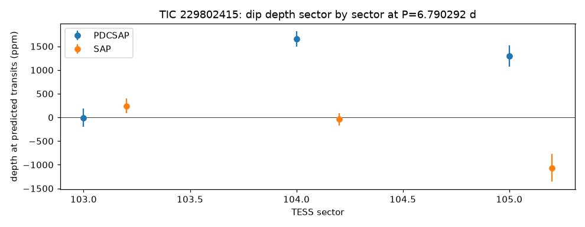
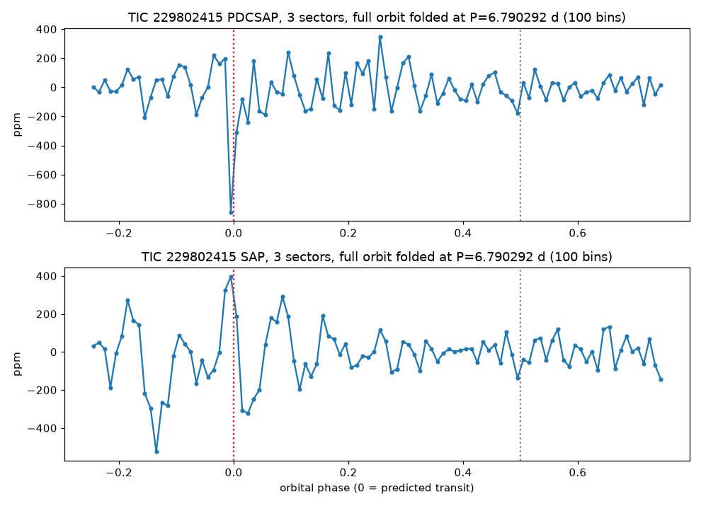

TRANSMISSION #025 ·
Deep dive on TIC 229802415: dips borrowed from a neighbour
Follow-up on TIC 229802415, from the first sector 104 draw.
The star is a magnitude 10.5 F star about 1.75 times the Sun's size, observed in sectors 103, 104 and 105, all from this year. The batch search found a 987 ppm (0.1%) dip every 6.79 days, two hours long, five transits, signal-to-noise 9.2. That would be something about six Earth radii across. The period is half of TESS's 13.7-day orbit, which is a common home for fake signals. The TIC catalog also says half the light in this star's aperture comes from other stars.
The dips don't behave. Individually they measure 242, -794, 2,227, 731, 823 and 2,211 ppm, and several sit next to data gaps or clusters of outliers. By sector, the cleaned light curves give -7 ppm in sector 103, 1,658 in sector 104 and 1,300 in sector 105, and the raw light curves show nothing overall.


The likely source sits 4.7 arcseconds away. TIC 229802416, magnitude 12.6, would need to dim by 0.66% to fake the dip, and its own light curve shows dips four to five times deeper at the same moments. At that separation the two stars share TESS pixels. A brighter star 41 arcseconds away would need 0.3%, but its light curve is too noisy to judge. The deep TLS search found the 6.79-day signal again and it failed vetting, with one event carrying most of the depth. A 13.05-day second signal failed the odd/even test. ExoFOP and the NASA Exoplanet Archive have nothing on either star.
Most likely light from the neighbour plus some processing trouble. Marked probably false positive.
Every signal, explained (2)
Tap a row to open it. Sorted by signal strength.
TIC 229802415#2Vetted out: likely eclipsing binary 13.051 d · 1,035 ppm · SNR 12.9 · ~6.1 R⊕
Failed the automatic checks. Here's why:
- Alternating dips don't match. Odd-numbered dips average 1529 ppm and even ones 726 ppm (5σ apart). A planet makes the same dip every time. Two different stars taking turns eclipsing each other, at twice this period, gives alternating depths.
- One dip does all the work. A single event carries 64% of the signal, so it could be a one-off glitch or a stray bump in the data.
TIC 229802415#1Vetted out: one-off event 6.790 d · 1,178 ppm · SNR 7.8 · ~6.5 R⊕
Failed the automatic checks. Here's why:
- One dip does all the work. A single event carries 66% of the signal, so it could be a one-off glitch or a stray bump in the data.
- Suspicious period. It sits close to a period that TESS itself produces (its 13.7-day orbit, half of that, or one day), so the spacecraft could be the source.
Candidates table
| TIC | # | Status | Vet | P (d) | Depth (ppm) | Dur (h) | SNR | SDE | N | R⊕ | Flags |
|---|---|---|---|---|---|---|---|---|---|---|---|
| 229802415 | 1 | NEW_CANDIDATE | fail | 6.7903 | 1,178 | 1.17 | 7.8 | 11.7 | 4 | 6.5 | ONE_EVENT_DOMINATES NEAR_SYSTEMATIC_PERIOD |
| 229802415 | 2 | NEW_CANDIDATE | fail | 13.0512 | 1,035 | 3.79 | 12.9 | 9.6 | 5 | 6.1 | ODD_EVEN_MISMATCH ONE_EVENT_DOMINATES |
Diagnostic plots
Full pipeline report
Planet-hunter report
Generated 2026-11-03 10:18 UTC by hunt.py v1.0.0.
Stars processed
1 stars total: 1 done
Signals found: 2 (0 new and passing vetting, 2 new but failing vetting, 0 matching known planets/TOIs/CTOIs).
New candidates that passed the automatic checks
These are the ones to look at first. Passing the automatic checks does not make something a planet. Open each plot and follow the eyeball checklist in BOT_BRIEF.md before telling anyone about it.
none
New signals that failed vetting
Usually eclipsing binaries, stellar variability or instrument noise. Worth a glance, rarely more.
| TIC | # | P (d) | depth (ppm) | dur (h) | SNR | SDE | N tr | Rp est (Re) | flags | note | plot |
|---|---|---|---|---|---|---|---|---|---|---|---|
| 229802415 | 2 | 13.05117 | 1035 | 3.79 | 12.9 | 9.6 | 5 | 6.13 | ODD_EVEN_MISMATCH ONE_EVENT_DOMINATES | no catalogued planet/TOI on this star | png |
| 229802415 | 1 | 6.79032 | 1178 | 1.17 | 7.8 | 11.7 | 4 | 6.54 | ONE_EVENT_DOMINATES NEAR_SYSTEMATIC_PERIOD | no catalogued planet/TOI on this star | png |


Signals matching something already catalogued
A good sanity check: if the pipeline recovers known planets, it is working.
none
Stars with errors
none
Caveat
A NEW_CANDIDATE here is only a candidate. Most automatic detections in TESS data turn out to be eclipsing binaries (often a nearby star blended into the same pixels), stellar activity or systematics. Confirming a planet needs pixel-level checks, follow-up photometry, and usually spectroscopy. Promising, carefully checked signals can be shared on ExoFOP (as a CTOI) or with Planet Hunters TESS.